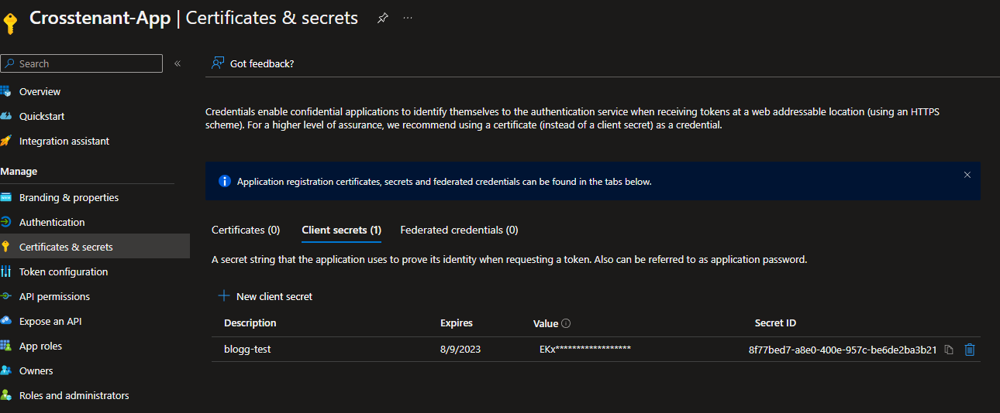
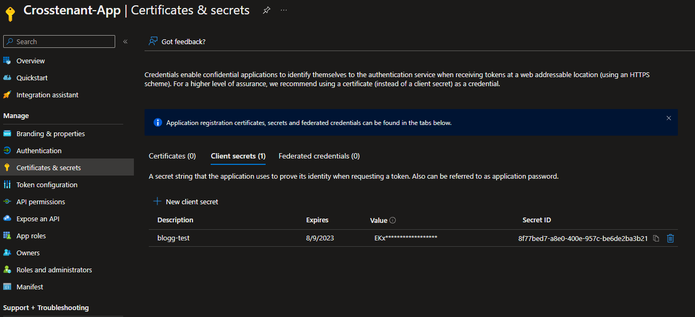
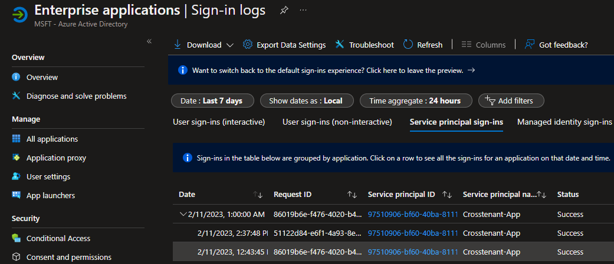
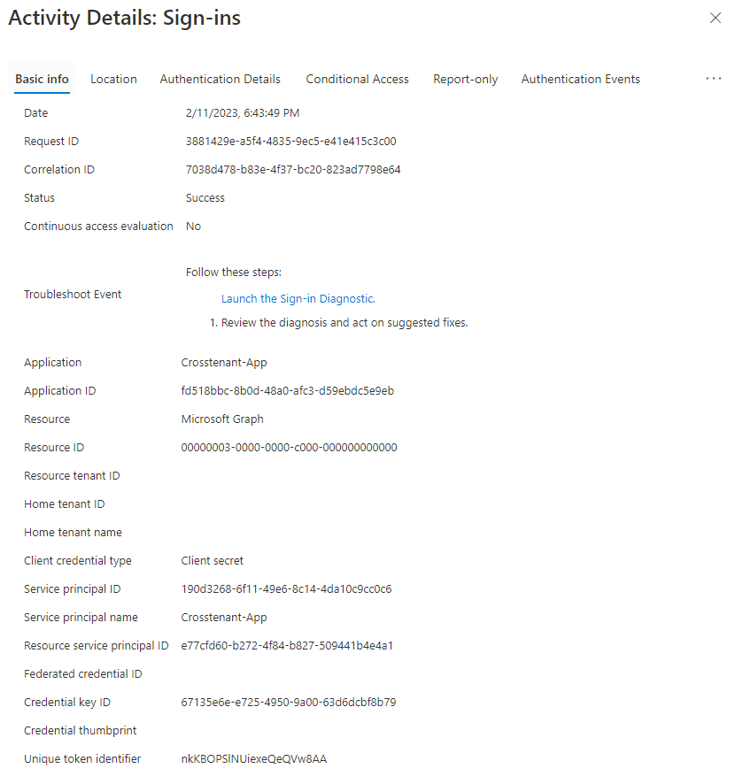
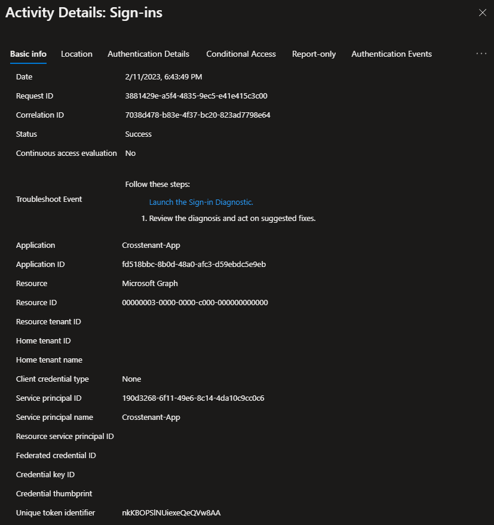
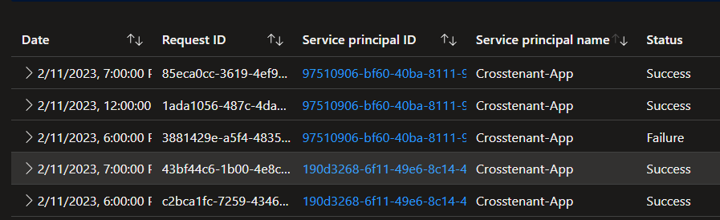
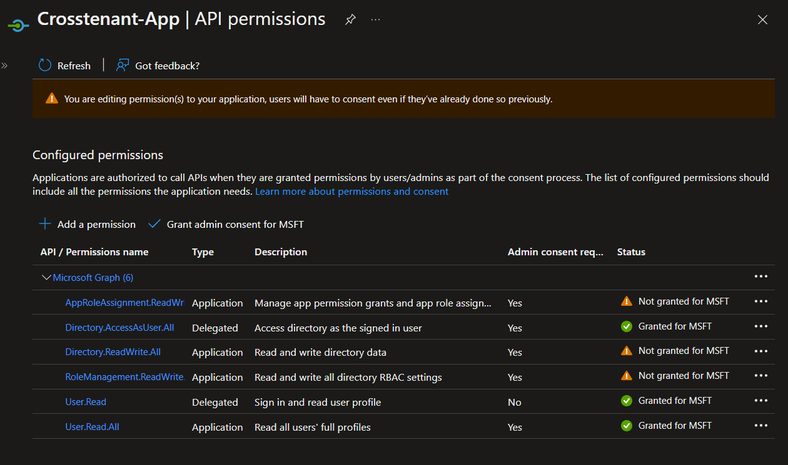
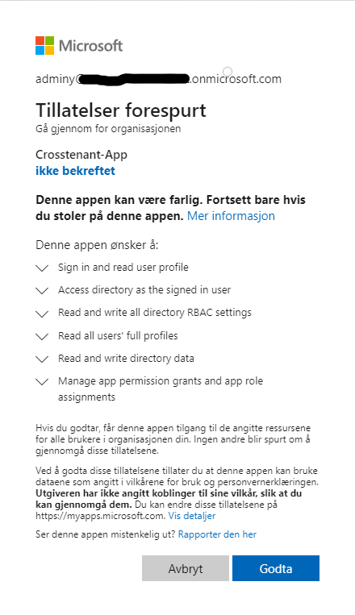

A look at the security of cross tenant applications in Azure AD
The goal of this article is to dig deeper into some poorly document security aspects of Azure Active Directory Applications, particularly regarding multi tenant applications.
This is not a comprehensive guide about application and service principal security, but an overview of some interesting security properties which I find non-obvious and interesting.
If you are not familiar with the basic concepts of Applications and Service principals in Azure AD, I suggest starting with the documentation. https://learn.microsoft.com/en-us/azure/active-directory/develop/application-model
The very TLDR of this is that App Registrations are simply the definition of an app. When an app is created a service principal is also created with it. The Service Principal is the "secureable object" that actually holds permissions. Microsoft documentation will sometimes treat these as the same thing, which causes some confusion that is very pertinent for this post.
Single Tenant Perspective
Getting basic info
After creating a multi-tenant app we get some basic info about our sample application.
1Get-AzADApplication -DisplayName "Crosstenant-app"
2DisplayName Id AppId
3----------- -- -----
4Crosstenant-App 7bb7fbe2-c75f-4372-a2e6-e3f2bfea38d1 fd518bbc-8b0d-48a0-afc3-d59ebdc5e9eb
5
6Get-AzADServicePrincipal -DisplayName "Crosstenant-app" | select Displayname, Appid, ID
7DisplayName AppId Id
8----------- ----- --
9Crosstenant-App fd518bbc-8b0d-48a0-afc3-d59ebdc5e9eb 97510906-bf60-40ba-8111-9c136c4c7363
Note that while the AppId is the same, the IDs are not. This is because the application and its associated service principal are separate objects in Azure AD. The AppId functions as the username of the service principal. The fact that these two are different comes with some interesting distinctions which are not obvious, semi-hidden credentials are among them.
Normally when you create credentials for an app, you go to app registrations in the Azure portal and register new creds under the Certificates & Secrets tab.

1Get-AzADAppCredential -ObjectId 7bb7fbe2-c75f-4372-a2e6-e3f2bfea38d1
2
3CustomKeyIdentifier DisplayName EndDateTime Hint KeyId SecretText StartDateTime
4------------------- ----------- ----------- ---- ----- ---------- -------------
5 blogg-test 08/09/2023 16:52:51 EKx 8f77bed7-a8e0-400e-957c-be6de2ba3b21 02/10/2023 17:52:51
The objectid for this commandlet is the Id of the App registration.
This credential allows logging in as the service principal, including for cross tenant access. Note that this credential is used by the service principal, but is registered to the app registration itself. This is a relevant distincion because you can also register credentials for the service principal itself, not for application registration.
The potential dangers this presents for privilege escalation has been noted before.
https://dirkjanm.io/azure-ad-privilege-escalation-application-admin/
It is not clear to me why Microsoft decided it should be possible to add credentials to these “hidden” service principals, or directly to service principals in general. I’m very curious about what usecase in which this makes sense. I have seen some first party Azure/Microsoft services do this for their own service principal, so from a detection standpoint there are some false positives.
Privilege escalation via Applications and service principals is a big topic that I won’t dive into in this post. However it is worth remembering that App Registrations and Service Principals are different objects, both of which can be assigned Owner roles.
This means that the “Owners” tab of an App Registration is not the same as the “Owners” tab of the Service Principal in Enterprise Applications. Owners are allowed to create credentials without having any of the Application Admin roles.
Owners of the Service Principal can only create credentials of the Service Principal itself, not for the App registration, and vice versa.
For a single tenant perspective this is irrelevant as these credentials have the same permissions, but as we will see later, this does have some consequence in a multitenant setting.
Semi-hidden credentials
An important takeaway is that for any application that exists in App registrations in your Azure portal, there can exist credentials both for the App registration itself, and for the underlying service principal.
If the App registration is not from your tenant, but you are using a third-party app, then credentials can exist for any Service principal in the Enterprise applications tab in the portal(after dirk-jan's blog post some limitations have been applied to Micrsoft 1st party service principals).
While the Application registration only lives in a single home tenant, the service principal is the “securable object” aka the thing that actually holds permissions. This means that for a globally unique Application, a different service principal exists in each tenant.
This is explained here: https://learn.microsoft.com/en-us/azure/active-directory/develop/app-objects-and-service-principals#relationship-between-application-objects-and-service-principals
Checking for both types of credentials for the same apps shows while there is a set of credentials for the app registration, none (yet) exists for the service principal.
1PS /home/soroganoth> Get-AzADAppCredential -ObjectId 7bb7fbe2-c75f-4372-a2e6-e3f2bfea38d1
2
3CustomKeyIdentifier DisplayName EndDateTime Hint KeyId SecretText StartDateTime
4------------------- ----------- ----------- ---- ----- ---------- -------------
5 blogg-test 08/09/2023 16:52:51 EKx 8f77bed7-a8e0-400e-957c-be6de2ba3b21 02/10/2023 17:52:51
6
7PS /home/soroganoth> Get-AzADServicePrincipalCredential -ObjectId 97510906-bf60-40ba-8111-9c136c4c7363
8PS /home/soroganoth>
The object id of Get-AzADServicePrincipalCredential is the id of the service principal
The Commandlet Get-AzADAppCredential checks for creds registered in the app registration, while the commandlet Get-AzADServicePrincipalCredential checks for creds on the service principal object itself.
Creating creds for the service principal.
1PS /home/soroganoth> New-azadspcredential -ObjectId 97510906-bf60-40ba-8111-9c136c4c7363 | fl
2
3CustomKeyIdentifier :
4DisplayName :
5EndDateTime : 02/11/2025 13:28:47
6Hint : guv
7KeyId : daffb636-6774-48ff-bfc6-e276ae81c766
8SecretText : nosecretforu
9StartDateTime : 02/11/2023 13:28:47
10AdditionalProperties : {[@odata.context, https://graph.microsoft.com/v1.0/$metadata#microsoft.graph.passwordCredential]}
We have now created credentials for the service principal itself, and not the application registration.
1PS /home/soroganoth> Get-AzADAppCredential -ObjectId 7bb7fbe2-c75f-4372-a2e6-e3f2bfea38d1
2
3CustomKeyIdentifier DisplayName EndDateTime Hint KeyId SecretText StartDateTime
4------------------- ----------- ----------- ---- ----- ---------- -------------
5 blogg-test 08/09/2023 16:52:51 EKx 8f77bed7-a8e0-400e-957c-be6de2ba3b21 02/10/2023 17:52:51
6
7PS /home/soroganoth> Get-AzADServicePrincipalCredential -ObjectId 97510906-bf60-40ba-8111-9c136c4c7363
8
9CustomKeyIdentifier DisplayName EndDateTime Hint KeyId SecretText StartDateTime
10------------------- ----------- ----------- ---- ----- ---------- -------------
11 02/11/2025 13:28:47 guv daffb636-6774-48ff-bfc6-e276ae81c766 02/11/2023 13:28:47
For the application in the portal, nothing has changed

Checking the manifest only shows one set of credentials
1{
2// Removed for brevity
3 "keyCredentials": [],
4 "name": "Crosstenant-App",
5 "passwordCredentials": [
6 {
7 "customKeyIdentifier": null,
8 "endDate": "2023-08-09T16:52:51.287Z",
9 "keyId": "8f77bed7-a8e0-400e-957c-be6de2ba3b21",
10 "startDate": "2023-02-10T17:52:51.287Z",
11 "value": null,
12 "createdOn": "2023-02-10T17:52:55.6424548Z",
13 "hint": "EKx",
14 "displayName": "blogg-test"
15 }
16 ],
17
18// Removed for brevity
In the Enterprise Applications part of the Azure I have not found anywhere to display the credentials now registered for the service principal.
This means that while not exactly well hidden, the average Azure admin is not likely to stumble upon them.
This affords threat actors a persistence method which is probably not well understood by admins, SecOps and IR teams.
KQL for the different operations
Adding Credentials to an Application Registration
1AuditLogs
2| where OperationName == "Update application – Certificates and secrets management "
Note that there is a trailing whitespace here, without it this query fails. This is likely a bug and may change in the future.
Adding credentials to the Service Principal (if this happens a lot in your tenant, I have questions)
1AuditLogs
2| where OperationName == "Add service principal credentials"
Adding owner for Service Principal
1AuditLogs
2| where OperationName == "Add owner to service principal"
Adding owner for App registration
1AuditLogs
2| where OperationName == "Add owner to application"
Checking access tokens
JWTs
Decoded JWT from App registration creds
1{
2 "typ": "JWT",
3 "nonce": "D6m6_7pckByYBBqZ92pzGS0EllfMKcYkNmcJIqwiJNA",
4 "alg": "RS256",
5 "x5t": "-KI3Q9nNR7bRofxmeZoXqbHZGew",
6 "kid": "-KI3Q9nNR7bRofxmeZoXqbHZGew"
7}.{
8 "aud": "https://graph.microsoft.com",
9 "iss": "https://sts.windows.net/69853a0f-0ff9-42b8-9170-ad4634237146/",
10 "iat": 1676115525,
11 "nbf": 1676115525,
12 "exp": 1676119425,
13 "aio": "E2ZgYNB/uLsy2PWn61v9PR1nH/sEAQA=",
14 "app_displayname": "Crosstenant-App",
15 "appid": "fd518bbc-8b0d-48a0-afc3-d59ebdc5e9eb",
16 "appidacr": "1",
17 "idp": "https://sts.windows.net/69853a0f-0ff9-42b8-9170-ad4634237146/",
18 "idtyp": "app",
19 "oid": "97510906-bf60-40ba-8111-9c136c4c7363",
20 "rh": "0.AU4ADzqFafkPuEKRcK1GNCNxRgMAAAAAAAAAwAAAAAAAAACDAAA.",
21 "roles": [
22 "User.Read.All"
23 ],
24 "sub": "97510906-bf60-40ba-8111-9c136c4c7363",
25 "tenant_region_scope": "EU",
26 "tid": "69853a0f-0ff9-42b8-9170-ad4634237146",
27 "uti": "bpsBhnb0IEC0oYl0SLs0AA",
28 "ver": "1.0",
29 "wids": [
30 "0997a1d0-0d1d-4acb-b408-d5ca73121e90"
31 ],
32 "xms_tcdt": 1673029163,
33 "xms_tdbr": "EU"
34}.[Signature]
Decoded JWT from Service Principal Creds
1{
2 "typ": "JWT",
3 "nonce": "45spjjliy4a_3TLdkhnMTmhyU0mJ1aedRZH9dIDIDp4",
4 "alg": "RS256",
5 "x5t": "-KI3Q9nNR7bRofxmeZoXqbHZGew",
6 "kid": "-KI3Q9nNR7bRofxmeZoXqbHZGew"
7}.{
8 "aud": "https://graph.microsoft.com",
9 "iss": "https://sts.windows.net/69853a0f-0ff9-42b8-9170-ad4634237146/",
10 "iat": 1676122368,
11 "nbf": 1676122368,
12 "exp": 1676126268,
13 "aio": "E2ZgYNBMnOfELl4ipNkUc/vW8f/PAQ==",
14 "app_displayname": "Crosstenant-App",
15 "appid": "fd518bbc-8b0d-48a0-afc3-d59ebdc5e9eb",
16 "appidacr": "1",
17 "idp": "https://sts.windows.net/69853a0f-0ff9-42b8-9170-ad4634237146/",
18 "idtyp": "app",
19 "oid": "97510906-bf60-40ba-8111-9c136c4c7363",
20 "rh": "0.AU4ADzqFafkPuEKRcK1GNCNxRgMAAAAAAAAAwAAAAAAAAACDAAA.",
21 "roles": [
22 "User.Read.All"
23 ],
24 "sub": "97510906-bf60-40ba-8111-9c136c4c7363",
25 "tenant_region_scope": "EU",
26 "tid": "69853a0f-0ff9-42b8-9170-ad4634237146",
27 "uti": "hC0SUfHmk0qOqKDv-7ErAA",
28 "ver": "1.0",
29 "wids": [
30 "0997a1d0-0d1d-4acb-b408-d5ca73121e90"
31 ],
32 "xms_tcdt": 1673029163,
33 "xms_tdbr": "EU"
34}.[Signature]
Diffing the access tokens shows no real difference beyond values you would expect to change. They seem to be functionally the same credentials, with the only real difference being that one of them is included in the manifest of the application.
Single tenant Logs
As you would expect both sign ins show up in the logs with the same service principal ID, which makes sense as both credentials are using the same username.

The Credential key ID is different between the two sign-ins, as you would expect. Beyond that there does not seem to be any information to differentiate between the two types of credentials.
Multi-tenant differences
Having looked at the differences between Service Principals and App Registrations from a single tenant perspective, from a multi-tenant perspective start becoming real weird.
In this situation the "Crosstenant-App" we have been working with so far is registered in the home tenant, and is now being approved for access by a customer tenant.
Basics of how an app knows which tenant its accessing
Firstly, a cross-tenant application defines the tenant it is accessing by the URL it fetches an access token from
1https://login.microsoftonline.com/<tenantidhere>/oauth2/v2.0/token
So different tenants require different access tokens. The client_id, or username is however the same across all tenants.
If you have created a cross-tenant app, an admin from a different tenant can approve this app into their tenant and grant access via the admin consent URL
1https://login.microsoftonline.com/organizations/v2.0/adminconsent?client_id=<your client id>&scope=https://graph.microsoft.com/.default
(there are a few different ways of creating a consent URL https://learn.microsoft.com/en-us/azure/active-directory/manage-apps/grant-admin-consent?pivots=portal)
This creates a service principal in that tenant. An App Registration is not created as this exists only in the home tenant.
Running as the admin in the customer tenant we can now see a service principal with the same AppId (as this is globally unique in Azure), but a different Id.
1PS /home/soroganoth> Get-AzADServicePrincipal -displayName "Crosstenant-app" | select Displayname, Appid, ID
2
3DisplayName AppId Id
4----------- ----- --
5Crosstenant-App fd518bbc-8b0d-48a0-afc3-d59ebdc5e9eb 190d3268-6f11-49e6-8c14-4da10c9cc0c6
Even though this is an app from a different tenant, we can still create credentials for this Service Principal in our customer tenant. This is pretty weird behaviour which should probably be a detection usecase for SecOps teams.
1PS /home/soroganoth> new-azadspcredential -ObjectId 190d3268-6f11-49e6-8c14-4da10c9cc0c6 | fl
2
3CustomKeyIdentifier :
4DisplayName :
5EndDateTime : 02/11/2025 17:29:08
6Hint : 3Wi
7KeyId : 67135e6e-e725-4950-9a00-63d6dcbf8b79
8SecretText : nosecretforu
9StartDateTime : 02/11/2023 17:29:08
10AdditionalProperties : {[@odata.context, https://graph.microsoft.com/v1.0/$metadata#microsoft.graph.passwordCredential]}
This allows us to get an access token to acts as this service principal in our own tenant (as the customer in this setting), with all its associated permissions.
Trying to use this client to gain access to the home tenant will not work (we are still using the same AppId as the username in all of these logins, regardless of which tenant we are in).
From the perspective of the home tenant, things are different depending on whether you are using the credentials from the app registration or the service principal.
Only the credentials from the app registration is included the in the manifest which is approved by customer admins, and only this credential can be used to access the customer tenant. Trying to get an access token to a customer tenant with the credentials registered directly to the service principal fails with an error of “invalid secret”.
For an attacker this means that creating creds for the service principal is useful for a single tenant scenario, but does not allow for supply-chain attacks to customer tenants.
Logging surprise
I was quite surprise to note that these logins from the credentials created in the customer tenant, was also logged in the home tenant.
Customer Tenant logs

Home tenant logs

Note identical Request and correlation ID.
Surprisingly the home tenant can see the Service Principal ID, despite it existing in a customer tenant.

Same Service Principal name, but with different IDs from different tenants
There are some interesting differences. The home tenant logs do not contain the Credential key ID field, while the customer tenant contains both Resource service principal ID and Credential key ID.
The Resource service principal ID is the local service principal for the resource, in this case it is the customer tenants Microsoft Graph Service Principal Id.
Looking at the same logs in log analytics I can see that a TenantId is included. This does not seem to be connected to any of the tenants and it does not have an OIDC config in Azure at
https://login.microsoftonline.com/<tenantid>/v2.0/.well-known/openid-configuration
Having done some testing across different tenants and apps, the value seems to differ, but none of them seem to resolve to an actual TenantId.
From a Managed Service Provider perspective these logs are limiting. I have not done any major testing, but the lack of a Credential key ID seems to be abnormal for Service Principal logins, and could be used to detect someone in a customer tenant logging in as your application (which should be a very rare anomaly), it does not actually tell you what tenant this is happening in. If you have only one app per customer, this is pretty simple.
If you have a multitenant App, there are things you can do. As the sign in logs in your tenant shows the service Principal ID, you can correlate that with the sub claim in the access token.
Create a script to get access token for each customer tenant and grab the sub claim from all the access tokens and map out which customer environments they belong to. This is very much a hack due poor logging on Microsofts part.
Simple KQL to detect lacking Credential ID
1AADServicePrincipalSignInLogs
2| where ServicePrincipalCredentialKeyId == ""
Customer Permissions Escalation
The owners and app admins of an App Registration can add permissions to an app without having the permission to consent for service principal to actually have these permissions.
Permissions added but not consented

However these permissions have now been included in the manifest, and if we send the admin consent URL to a customer admin again, they will be asked to give these permissions to the app.

This means that while the Owner of an application registration in Azure is not able to constent to the permissions in their own Azure tenant, they are indirectly able to do so in customer environments. This is non-obvious behaviour which service providers should take note of.